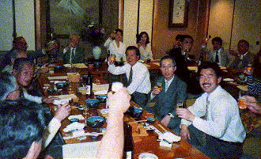
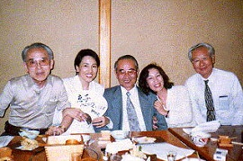
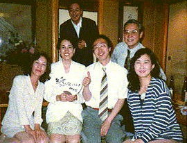
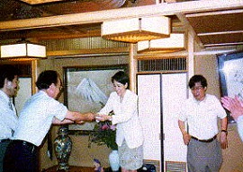
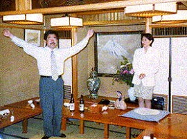

高高神田会の第５回目の寄合いが、 平成９年５月２８日に開かれました。出席者は３０人。右の写真は乾杯のときの様子ですが、右半分が写っていません。
今回は、高々神田会の華でありました池田さん（４７年卒）が、「ゆえ」あって高松に帰郷することになったために、その送別会ということでした。
また、雑談テーマは、「アメリカ競馬大学留学報告」として、 塚原さん(２７年卒)が報告しました。
池田さんの「ゆえ」が何かは、とうとう分からずじまいでしたが、みんなで送別の辞を寄せ書きしました。
中でも、当日特別参加した、ニューヨークで活躍中のジャズプレイヤー藤原さん(４７年卒)は、五線に送別のメロディーを書いて贈りました。
こんな洒落たことができるのも、神田会ならではであるーと皆で自慢しあったのでした。
この寄せ書きは、神田会を代表して、岡崎さん(３７年卒)が池田さんに贈呈しました。
最後に、応援団ＯＢの中島さん(４７年卒)によるエールで、神田会のメンバー全員で、池田さんの高松での活躍を祈念しました。



